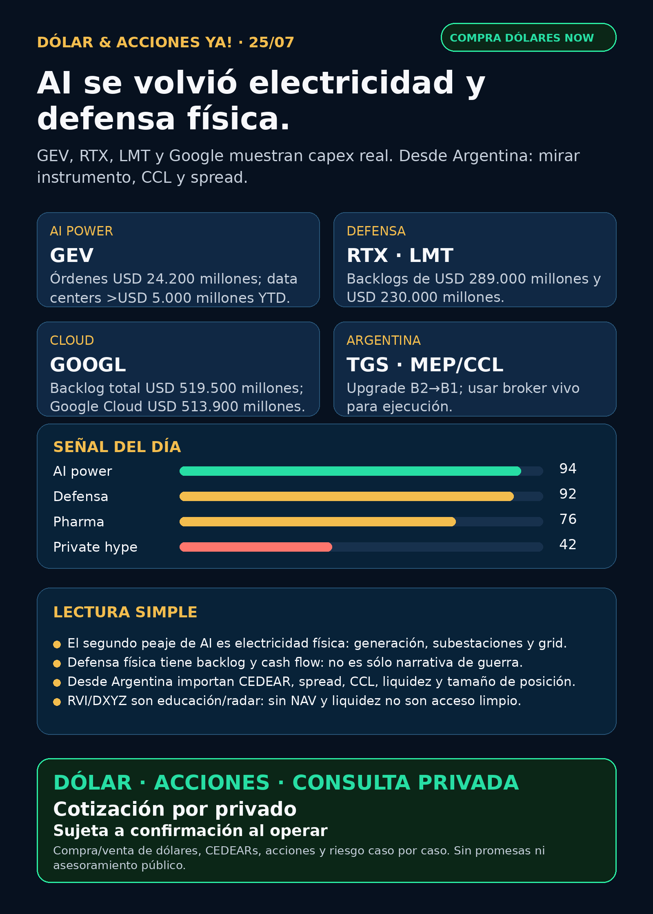

AI power, defensa y cloud real.
GEV muestra electricidad física; RTX y Lockheed muestran defensa con backlog; Google muestra demanda cloud. Desde Argentina: mirar dólar, CEDEARs, CCL y spread.
Texto WhatsApp
Placa del día

Dólar & Acciones YA — Stock Radar — 25/07
Lectura simple del día
Hoy el radar marca tres mundos que se están volviendo uno solo: AI power físico, defensa industrial y capex real. La inteligencia artificial no vive solamente en una app: necesita electricidad, turbinas, subestaciones, data centers, chips, cooling, deuda, permisos y clientes grandes que paguen.
En criollo: una buena empresa no siempre es una buena inversión al precio de hoy; y una acción afuera no siempre es un buen instrumento para Argentina. Antes de mover plata real hay que mirar precio, liquidez, spread, CCL/MEP, comisiones, tamaño de posición y horizonte.
Este orden es educativo/señal de radar. No es orden de compra.
Tesis central
La señal verificable 24–72 horas es: AI se está volviendo electricidad física, defensa con backlog y cloud con compromisos enormes.
GEVmuestra que el segundo peaje de AI es energía: generación, turbinas, electrificación, switchgear y conexión a data centers.RTXyLMTmuestran que defensa física no es solamente narrativa geopolítica: hay backlog, órdenes y cash flow.GOOGLmuestra demanda estructural: Google Cloud concentra casi todo el backlog reportado en el 10-Q.TSLAsigue en radar de autonomía/physical AI, pero con capex pesado y execution risk.AZNdeja una señal pharma verificable fuera del ruido GLP-1.- Argentina entra por dólar, CEDEARs, energía local y riesgo de instrumento:
TGStuvo mejora crediticia, pero eso no equivale a “comprar”.
Ranking educativo por calidad de tesis
1. AI power / electricidad física — señal fortalecida
- GE Vernova (
GEV): Q2 2026 con orders de USD 24.200 millones, +88% orgánico; backlog +USD 13.000 millones secuencial; Gas Power equipment backlog + slot reservations de 100 a 116 GW; management espera al menos 125 GW a fin de 2026; data-center orders en Electrification por más de USD 5.000 millones YTD. Fuente SEC Exhibit 99.1: https://www.sec.gov/Archives/edgar/data/1996810/000199681026000147/gevpressrelease2q26.htm - Lectura: si AI consume más compute, alguien tiene que construir y conectar electricidad. Ahí entran turbinas, subestaciones, transformadores, switchgear, grid, cooling y permisos.
- Accionabilidad: global/internacional vía ticker USA
GEV. Para Argentina, CEDEAR/liquidez/spread no verificado en esta corrida; puede existir proxy local imperfecto vía energéticas argentinas, pero no es la misma exposición. - Riesgo: valuación, ciclo de órdenes, supply chain, reguladores, execution risk y timing de data centers.
2. Defensa / guerra física / aerospace industrial — señal fortalecida
- RTX (
RTX): Q2 2026 con sales de USD 24.708 millones (+14%), adjusted EPS USD 1,89, operating cash flow USD 3.547 millones, free cash flow USD 2.878 millones, backlog USD 289.000 millones: USD 170.000 millones comercial + USD 119.000 millones defensa. Elevó outlook 2026. Fuente SEC Exhibit 99: https://www.sec.gov/Archives/edgar/data/101829/000010182926000025/a2026-07x238xkerexhibit99.htm - Lockheed Martin (
LMT): Q2 2026 con sales USD 20.063 millones (+11%), net earnings USD 1.836 millones, free cash flow USD 2.917 millones, new orders USD 65.000 millones y backlog récord USD 230.000 millones. Incluye contrato multianual de USD 35.000 millones con Missile Defense Agency para THAAD y prueba live-fire de Sanctum counter-drone. Fuente SEC Exhibit 99.1: https://www.sec.gov/Archives/edgar/data/936468/000162828026049277/ex991q22026.htm - Lectura: defensa no queda limitada a drones high-beta. También hay primes con motores, radares, interceptores, sustainment, repuestos y contratos largos.
- Accionabilidad: global vía tickers USA; Argentina/CEDEAR/liquidez no verificado hoy. Si hay CEDEAR, revisar ratio, volumen, spread y CCL implícito.
- Riesgo: precio de entrada, presupuesto público, supply chain, geopolítica, márgenes y concentración de contratos.
3. Cloud / hyperscaler AI infra — demanda estructural
- Alphabet (
GOOGL/GOOG): 10-Q filed 23/07/2026: remaining performance obligations / revenue backlog de USD 519.500 millones, de los cuales USD 513.900 millones corresponden a Google Cloud. El filing también menciona commitments/derivatives vinculados a data centers. Fuente SEC 10-Q: https://www.sec.gov/Archives/edgar/data/1652044/000165204426000071/goog-20260630.htm - Lectura: ese backlog es demanda aguas arriba para semis, HBM, foundries, networking, energía y data centers.
- Accionabilidad: global vía
GOOGL/GOOG; Argentina probablemente por CEDEAR, pero ratio/spread/liquidez no verificados en esta corrida. - Riesgo: capex, margen cloud, competencia, antitrust y concentración de AI spend.
4. Physical AI / autonomía — radar con capex pesado
- Tesla (
TSLA): 10-Q: cash from operations USD 8.630 millones en H1 2026; capex USD 8.280 millones vs USD 3.890 millones en H1 2025; espera capex 2026 superior a USD 25.000 millones por AI initiatives, compute infrastructure, data centers, semiconductor/Optimus/solar manufacturing. Reporta inicio de producción de Cybercab y preparación para Optimus a escala. Fuente SEC 10-Q: https://www.sec.gov/Archives/edgar/data/1318605/000162828026049270/tsla-20260630.htm - Lectura: robotaxi/Optimus siguen en radar, pero no se compran por slogan. La pregunta es ejecución, permisos, seguridad, caja y timing.
- Accionabilidad: global/CEDEAR probable, no verificado hoy.
5. Pharma/salud — señal verificable, no humo GLP-1
- AstraZeneca (
AZN): Etcamah / camizestrant en combinación con CDK4/6 inhibitor fue aprobado en la UE para primera línea de advanced ER-positive breast cancer. Fuente SEC 6-K: https://www.sec.gov/Archives/edgar/data/901832/000165495426006803/a5622n.htm - Lectura: salud no es sólo GLP-1. Oncology regulatorio puede ser señal más limpia que titulares reciclados.
- Accionabilidad: global/USA según broker; Argentina local requiere CEDEAR/instrumento disponible. Biotech y pharma chica tienen riesgo binario.
Watchlist priorizada de hoy
- GEV: señal fortalecida por orders/backlog/data centers. En radar, no recomendación.
- RTX / LMT: defensa física con resultados, backlog y FCF. En radar por calidad industrial.
- GOOGL/GOOG: fortalece demanda AI infra/cloud. Vigilar capex, margen y antitrust.
- TSLA: physical AI/autonomy con capex pesado; vigilar ejecución y caja.
- AZN: pharma verificable por aprobación EU de Etcamah/camizestrant.
- TGS: mejora crediticia de notes
B2aB1; señal menor de financiamiento/riesgo país, no catalyst operativo. Fuente SEC 6-K: https://www.sec.gov/Archives/edgar/data/931427/000093142726000009/tgs.htm - RVI / HOOD: Form 4 filed 24/07: Robinhood Markets vendió 28.431 shares por aprox. USD 764.858, VWAP aprox. USD 26,90; quedan 13.181.275 shares. Fuente SEC XML: https://www.sec.gov/Archives/edgar/data/2085091/000178387926000101/wk-form4_1784928110.xml. Estado: bandera amarilla instrumental.
- RKLB: discovery sobre contrato/defense deal por USD 266 millones sigue sin primaria Rocket Lab/DoD/SEC nueva. Estado: auditar, no elevar como hecho.
- NVDA / TSM / ASML / MU / AVGO: tesis AI semis vigente, pero sin primaria nueva superior esta madrugada.
- PLTR / AAPL / HOOD: revisados, sin señal operativa nueva fuerte.
- Gold / GLD / GOLD / B: instrumento ambiguo. No hablar de precio ni tesis sin confirmar si es ETF oro, Barrick u otro activo.
Portfolio/base Mi Simulación
La cartera de Ricardo fue liquidada, devuelta y terminada según estado vigente del 24/06. No hay P&L activo que reportar. Esta sección queda como vigilancia para una próxima compra o nuevo inversor, no como rendimiento de cartera real.
Capa Argentina: dólar, CEDEARs e instrumento
- BlueLytics 2026-07-24T19:45:52.263782-03:00: oficial venta $1.519, blue venta $1.545. CriptoYa 25/07 08:45: USDT ask $1.597,90; MEP AL30 $1.532,78 y CCL AL30 $1.622,15 con timestamps de cierre 24/07 16:59/24/07 16:59.
- Para ejecutar hoy: broker vivo. BlueLytics viene de cierre 24/07 19:45; MEP/CCL AL30 de CriptoYa vienen con timestamps de cierre 24/07 16:59; USDT sí estaba fresco a las 08:45.
- CEDEAR ≠ acción USA: importan ratio, liquidez, spread, volumen, CCL implícito, comisiones y tamaño de posición.
- Energía argentina revisada:
TGStuvo upgrade de notes;YPF,PAM/PAMP,VIST,CEPUsiguen como radar por Vaca Muerta/power/gas, pero sin primaria nueva más fuerte hoy.
Energía y power hardware
- Fuerte hoy:
GEVpor Gas Power + Electrification + data-center orders. - Transformadores/power hardware revisados: Hitachi Energy/Hitachi (
6501.T/HTHIY), Siemens Energy (ENR.DE), HD Hyundai Electric (267260.KS), Hyosung Heavy Industries/HICO (298040.KS), Virginia Transformer y Delta Star. Sin primaria fresca superior hoy; tesis estructural intacta. - En criollo: AI no sólo necesita chips; necesita que llegue electricidad estable al edificio correcto, con equipos que pueden tardar años.
Pharma/salud
AZN: señal verificada por aprobación EU de Etcamah/camizestrant.LLY/NVO: titulares GLP-1/retatrutide/orforglipron y disputa Novo-Lilly siguen en discovery; falta primaria FDA/company/openFDA actual para headline.MRK,PFE,JNJ: revisados sin señal fresca superior.
Radar amplio fuera de watchlist
- Defensa/aeroespacial:
RTXyLMTson la señal fuerte;AVAV, GE Aerospace,NOC,GD,HWM,KTOS,BA,ITA/XARrevisados sin señal nueva superior. - Space/orbital AI:
RKLBySPCX/SpaceX revisados. Sin filing nuevo material verificado; titulares secundarios quedan audit-only. - Autonomous mobility / physical AI:
TSLAes la señal verificable; Waymo/Alphabet, Uber, Zoox/Amazon y Joby revisados sin primaria nueva comparable. - Crypto gobernado / rails: Robinhood Chain/Stock Tokens/Agentic Accounts siguen como tema educativo previo; sin señal nueva superior hoy. Memecoins quedan fuera.
- Private wrappers: RVI/DXYZ/ARKVX/AGIX/XOVR/VCX/FAPMI/Forge sirven para educación y seguimiento, no para vender “acceso limpio” a privadas sin NAV, holdings, premium/descuento, liquidez y acceso Argentina/USA.
Red flags / hype para ignorar
RKLBcontrato de USD 266 millones sin primaria nueva: auditar.- “Lilly ya aprobado” si sólo viene de notas o ensayos: no confundir ensayo, demanda o marketing con aprobación FDA.
SPCX/SpaceX por titulares de stakes/lockups sin filing: audit-only.RVI/DXYZ/VCX como “acceso fácil” a SpaceX/OpenAI/Anthropic: incompleto sin NAV, premium, holdings, sponsor sales y liquidez.- CEDEAR con spread alto: puede arruinar una buena tesis global.
Qué mirar después
- Primaria Rocket Lab/DoD/SEC para el supuesto contrato RKLB.
- Próximos filings de
GEV, utilities y power hardware por data-center orders. - Fuente primaria Lilly/FDA/Novo para GLP-1 si aparece catalyst real.
- CEDEARs/liquidez local de
GEV,RTX,LMT,AZN,TSLA,GOOGLsi Charly quiere cartera Argentina. - MEP/CCL vivo antes de hablar de ejecución real.
Recibo visible de cobertura
Revisado: watchlist base, AI infra/semis, energéticas argentinas, power hardware/transformadores, pharma/GLP-1/oncology, defensa/aeroespacial, space/private wrappers, autonomía/physical AI, fintech/AI agents, crypto gobernado y mercado amplio. Si un carril no aparece arriba, fue porque no tuvo señal primaria nueva más fuerte.
Servicio privado
Dólar · CEDEARs · Acciones · Riesgo. Compra/venta de dólares y consultas privadas caso por caso. Cotización sujeta a confirmación al momento de operar.
Disclaimer
Esto es research educativo para decisión humana. No es asesoramiento financiero personalizado ni instrucción de compra/venta.
Links
Web oficial: https://simulacion-uno-finanzas.web.app/
Canal WhatsApp: https://whatsapp.com/channel/0029Vb8G9fqGzzKSVUX3hc1S